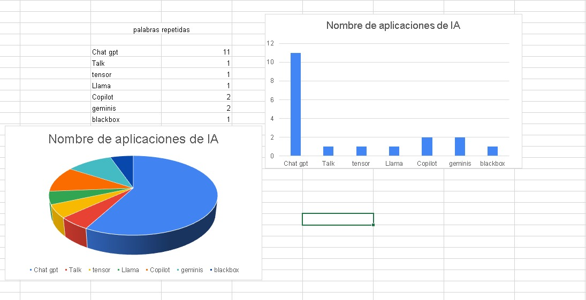

Hoy tuve dificultad al utilizar github y no pude realizar el ejercicio de graficar la encuesta
vimos que datos se repetían y buscamos graficar de cierto que nos brindara dicha información en una grafica de pastel


Se agruparon las actividades que eran similares y se contaron manualmente
Elegimos la columna número 5 y sacamos las palabras repetidas con la ayuda de chatGPT y las rectificamos manualmente e hicimos lo mismo con las palabras únicas (que no se repetían) Luego último hicimos la suma de las palabras repetidas y también sacamos el número de palabras únicas y por último hicimos un gráfico circular 3D con los números de las palabras repetidas

de manera manual tome los nombres de ias distintas y luego conté cuantas veces se repetía cada una, para al final juntar los valores y generar un anillo con Excel donde podemos ver que lo que vas se repite es chatgpt

yo utilice excel con formulas para sacar las palabras que estaban repetidas separando el texto y luego contando las palabras mas importantes de las inteligencias artificiales utilizando esta formula para contar las palabras que se repiten, SUMA(SI(NO(ESERROR(BUSCAR("chat"; A25:AY41)));1;0))+SUMA(SI(NO(ESERROR(BUSCAR("chat gpt"; A25:AY41)));1;0))
SE REALIZO UTILIZANDO FORMULA DE EXCEL Y TABLAS DINAMICAS.

David Sarria- Valentina Montealegre: Nos dimos cuenta que hay varias coincidencias y todas apuntan hacia el hecho de que todos contamos con habilidades blandas suficientes y exactas para llevar a cabo un excelente trabajo en equipo.

basicamente lo que hicimos fue indentificar, contar las palabras y finalmente estructuramos los resultados en una tabla de conteo que permite ver rápidamente la frecuencia de cada palabra y proporciona una vision general de los temas mas mencionados. los cuales son la inseguridad, contaminación y transporte